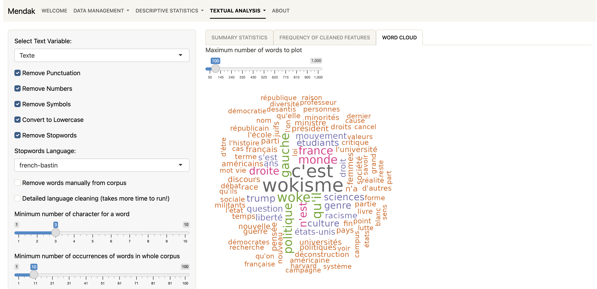
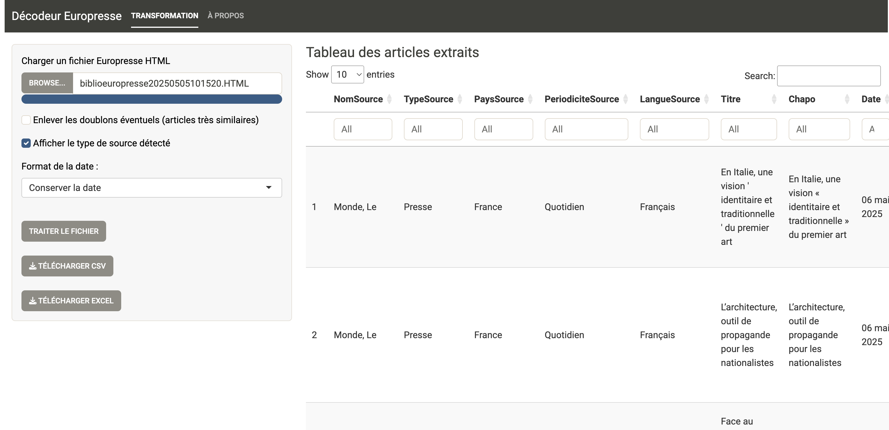

Après quelques expériences d’enseignement des statistiques pour les sciences sociales, et notamment d’analyse textuelle sur R (voir par exemple ici), j’ai voulu avoir recours à un logiciel “clic-bouton” pour enseigner auprès d’étudiant·es qui ne maitrisent pas et n’ont pas forcément vocation à apprendre à coder en R.
Il existe déjà pléthore de logiciels d’analyse textuelle qui répondent à ce critère : Iramuteq (fondé sur Alceste), Hyperbase (qui dispose d’une version utilisable en ligne), TXM…
Comme j’avais été familiarisé à l’analyse textuelle grâce à Iramuteq, que j’appréciais l’algorithme de classification proposé par Max Reinert, j’avais été ravi de voir que Julien Barnier en proposait une implémentation dans le package rainette dans R.
L’idée a alors été de proposer une application en ligne permettant d’utiliser cet algorithme.
Mendak, une appli shiny
Mendak (My Easy-to-use Navigator for Data Analysis and Klustering) est une application shiny disponible pour le moment sur huma-num ou sur le serveur de Benjamin Azoulay et Charles de Courson qui ont développé Gallicagram (merci à eux !). Le deuxième lien marche a priori mieux.
De manière expérimentale, on peut aussi, si on a R sur son ordinateur, utiliser Mendak en téléchargeant un package R.
L’application permet d’utiliser des jeux de données existants ou de charger son propre jeu de données. Un tutoriel relativement complet en français est aussi proposé.
Les outils proposés relèvent essentiellement de l’Analyse Géométrique des Données.

Constituer un corpus textuel avec Europresse
Avant d’utiliser Mendak, on peut aussi créer un corpus d’articles disponibles sur Europresse (si on a des identifiants) en suivant ce petit tutoriel. Cette création d’un corpus d’articles est facilitée par l’appli EuroDecodeur qui permet de transformer un fichier html issu d’une recherche et est disponible ici ou ici.

Les applications ne présentent pour le moment pas le code R correspondant aux différentes manipulations effectuées. Toutefois, on pourra trouver dans ce tutoriel pour R quelques pistes d’analyse pour son corpus en utilisant R.